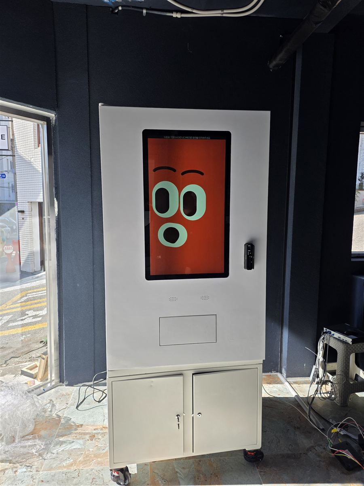
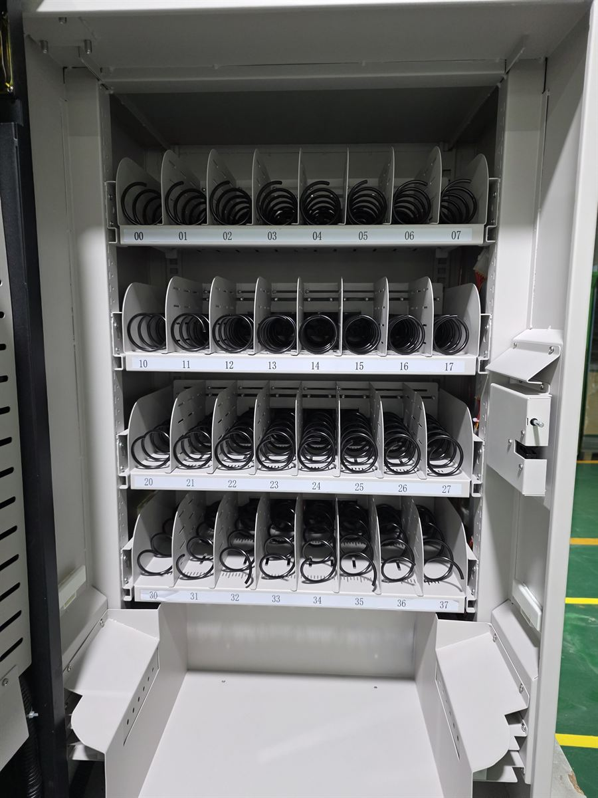
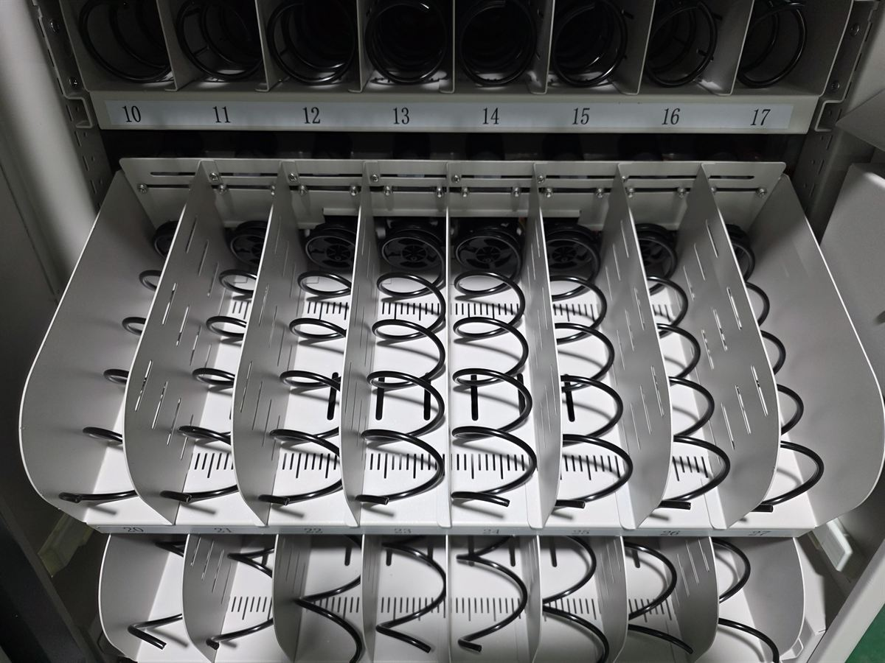
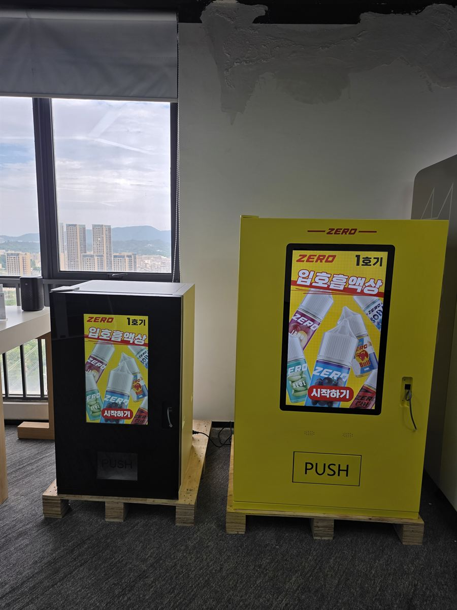
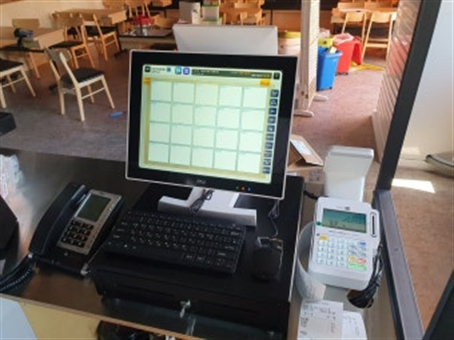
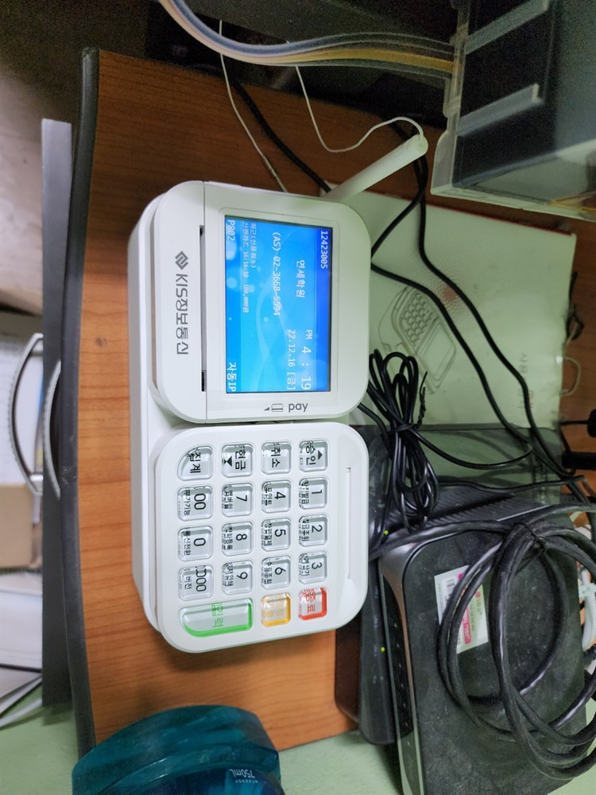
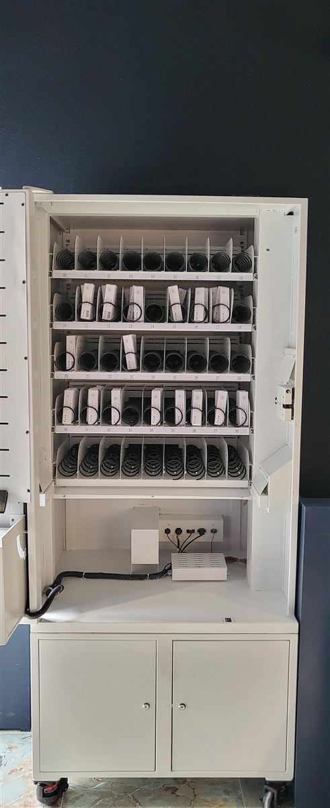
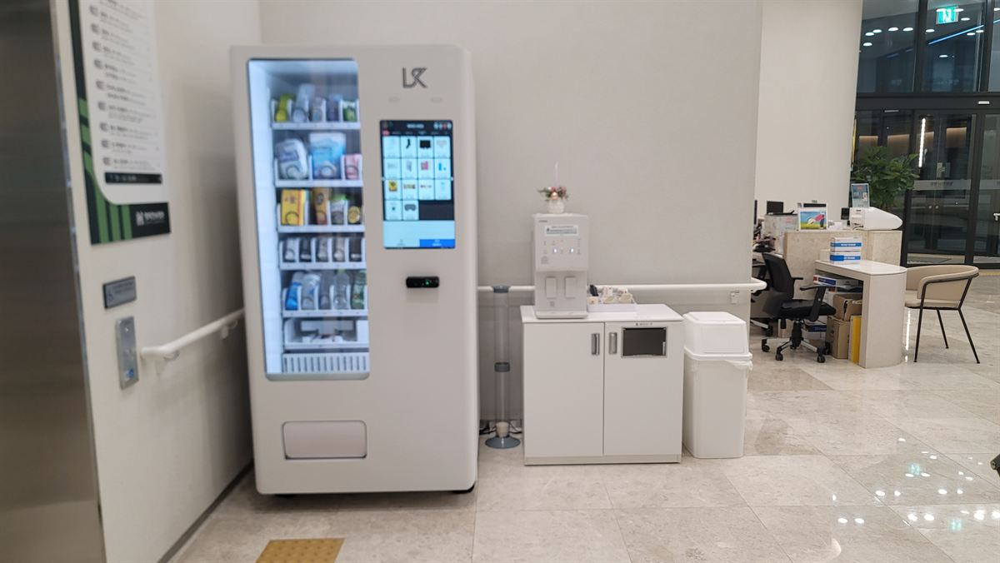

설치 후기
H포스가 직접 설치한 전국 카드단말기·포스기·키오스크·무인자판기 현장 기록입니다. (전체 253건 · 1/26 페이지)

목포 무인자판기 설치 완료 — 셀프 사진관 전면 터치스크린·이동식 하부장
앞면이 통째로 화면이라 어두운 매장에서도 눈에 띄고, 상품을 바꿀 때 진열 대신 화면만 고치면 됩니다. 바퀴 달린 잠금 하부장을 받쳐 여유 재고를 넣어 두고 자리도 옮길 수 있습니다.

천안 무인자판기 설치 완료 — 스터디카페 네 단 서른두 칸 24시간 무인 운영
네 단을 모두 열어 서른두 칸을 잡은 스터디카페 자판기입니다. 무거운 것은 위, 가벼운 간식은 아래에 두고 배출구 폭까지 맞춰 야간에도 사람 없이 돌아가게 구성했습니다.

고령 무인자판기 설치 완료 — 공장 휴게실 한 단 여덟 칸 상품 구성
문을 열면 한 단에 여덟 칸, 칸마다 번호와 스프링이 들어갑니다. 칸막이를 옮겨 상품 폭을 맞추고 재고는 앱에서 칸 번호 그대로 확인합니다.

전주 무인자판기 설치 완료 — 전자담배 액상 성인인증 2대 구성
전자담배 액상처럼 어른만 살 수 있는 품목은 성인인증이 되는 기종인지부터 확인해야 합니다. 대형기 한 대에 소형기를 붙여 진열 칸을 늘리고, 재고와 매출은 앱에서 원격으로 봅니다.

김해 무인자판기 설치 완료 — 게스트하우스 4개 국어 터치스크린
화면 버튼 한 번으로 한국어·영어·중국어·일본어가 바뀌어, 외국인 손님이 직접 고르고 결제합니다. 앱으로 재고를 보고 설치비는 무료입니다.

여수 포스기 설치 완료 — 여서동·여수밤바다 상권 통합 관리
여서동·학동·여수밤바다 관광상권 매장에 포스와 카드단말기 통합 관리. 유선·무선 카드결제기까지 설치비 무료.

안산 카드단말기 설치 완료 — 고잔·중앙동 상권 결제 구축
고잔동·중앙동·시화공단 상권 매장에 유선·무선 카드결제기와 포스기. 모든 카드사 일괄 가맹, 설치비 무료.

계양구 무인자판기 설치 완료 — 뷰티·소품 무인 매장 터치형 상품 자판기
직원 없이 운영하는 뷰티·소품 매장에서 진열은 테이블이, 판매는 터치형 자판기가 맡는 구성입니다. 카드·간편결제 셀프 구매, 앱 원격관리, 설치비 무료입니다.

울산 남구 무인자판기 설치 완료 — 소형 상품 매장 스프링 진열형 자판기
문을 연 자판기 내부 사진으로 5단 선반과 스프링 나선 칸 구조를 설명합니다. 칸 번호별 판매량은 앱으로 확인하고 구매·임대·렌탈 모두 가능합니다.

해운대구 무인자판기 설치 완료 — 병원 1층 로비 음료·생활용품 자판기
병원 1층 로비, 엘리베이터와 안내데스크 사이에 음료·생활용품 무인자판기를 설치한 사례입니다. 카드·간편결제로 셀프 구매, 재고는 앱으로 확인하고 설치비는 무료입니다.